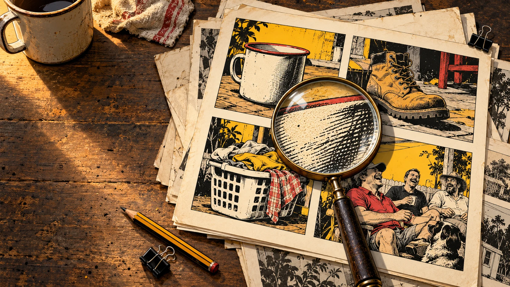
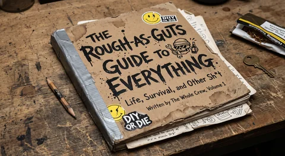
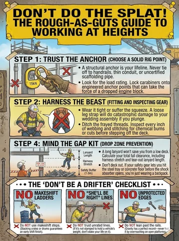
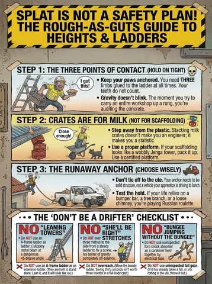

Show your working
Rough as Guts is a developing collection of funny illustrated ideas about habits, practical skills and getting along.
Every good guide starts somewhere a bit rough.
The starting material is a 45-slide deck covering mine work, camp life, shared spaces and broader Australian humour. The project is exploring how that voice could grow into useful, memorable material for different readers.
What the name is doing
Rough as Guts gives the humour a familiar Australian starting point: a bit blunt, a bit grubby and quite capable of making a job harder than it needs to be. The pages work best when someone recognises a habit and laughs before considering a better way.
- Affectionate observation.
- Recognisable situations.
- A useful point.
- Room for the reader to laugh at the author too.
Different readers, different editions
Men’s, women’s and Young Crew concepts are in development alongside workplace formats. Each audience needs its own language, situations and review. There is room for different characters and points of view throughout the collection.
- Adult life, relationships and everyday competence.
- Young people learning practical independence.
- Crews sharing work and camp facilities.
- Family, friends and co-workers choosing a gift with a hint.
How to read the material here
The source archive preserves what was supplied. The catalogue describes its visible content. New gags, editions and formats are proposals marked in development. The original deck includes unverified safety and medical statements and is not presented as endorsed training.
- Source wording and source imagery remain identifiable.
- Unclear text and visible inconsistencies are recorded.
- Proposed revisions can change the joke, wording or scene deliberately.
- Any future claim of review belongs to the particular item reviewed.
AI imagery, human decisions
AI-generated imagery is central to the proposed picture-book approach. People still choose the observation, write the useful point, decide whether a joke is fair and check whether the picture communicates it accurately. An attractive image earns its place by helping the page work.
- Clear briefs before image generation.
- Specific review of copy and pictures.
- Attention to audience, dignity and context.
- Versions kept with their source and revision notes.
What is being explored
Books, small guides, workshop posters, cards, newsletters, manual illustrations and short animations are possible formats. Dating, exercise, cooking and cleaning, hygiene, parenting and travel are proposed topic areas. Each needs a useful point, a good joke and a format people will enjoy reading. These ideas are in development.
Original. Optimised. Traceable.
Compare the original embedded JPEG with its web derivative. The originals retain their exact supplied bytes, including embedded metadata. Web copies are compressed for browsing; they have not been retouched or presented as new source art.
Original files can be several megabytes. They load here only when you choose to compare.
Credit where it belongs
Darryl Gough (Daz) supplied the Rough as Guts concept and original draft artwork. Luke Nathan Hayes is developing the wider guide idea, editorial systems and this website. New site hero illustrations are AI-generated; their prompts and file hashes are recorded separately.
The Strange But True Public Source Licence is the interim licence for Luke’s original material, copied unchanged at his request. Daz’s supplied source work retains its respective rights. A shared licence is still to come. This site does not announce a new ownership agreement.
Read the licensing and source noticeFrom Daz’s original pile
Original draft examples. Open the source record for readable text and source notes.


